1一句母题
所有素材都在回答同一个问题：这一年，谁让人们想去搜索、了解和记住？你的版本可以改成：“改革开放以来，家族企业究竟改变了什么？”
Google《2024 — Year in Search》逐段拆解，以及一条可直接执行的“改革开放以来家族企业大事件 → 家族企业丛书发布”复刻路线。
这支片高级，不是因为它把画面“变”得多，而是因为每一次换画面都有理由。真正的形式是结构。
所有素材都在回答同一个问题：这一年，谁让人们想去搜索、了解和记住？你的版本可以改成：“改革开放以来，家族企业究竟改变了什么？”
片子不是从头快到尾。它在 00:17 和 03:21 两次加速，在危机、情绪与最终品牌段主动减速。快慢反差才让“快”成立。
动作接动作、人物反应接事件、一个关键词接另一条真实原声。80% 以上可以是普通硬切，前提是动作、语义、构图或声音至少匹配一项。
新闻、采访、比赛解说、欢呼和现场声轮流接棒。观众听见下一段，再看到下一段，跨来源的素材因此变得连贯。
原片用“搜索”把内容组织起来。你的版本不要照搬 Google 搜索框，改用年份、档案编号、旧报纸、书页，最后自然落到丛书。
学习的是语法，不是复制原片的受版权保护素材、音乐与界面。正式发布前，逐条确认画面、音乐、照片、新闻片段和 UGC 的授权。
读数说明：177 镜来自平衡阈值的自动检测并结合关键画面人工查看，用于学习节奏，不声称等于导演工程里的绝对镜头数。快速闪光、画中画与强运动可能被算法当成切镜。
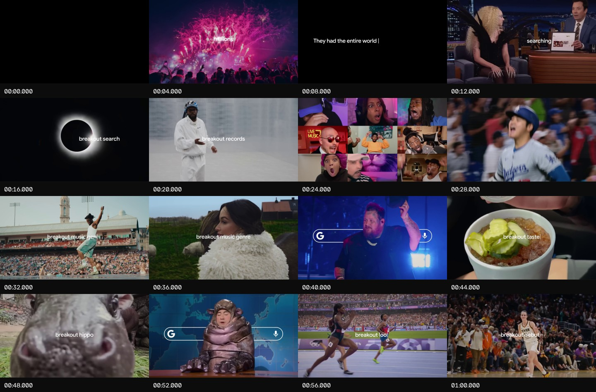
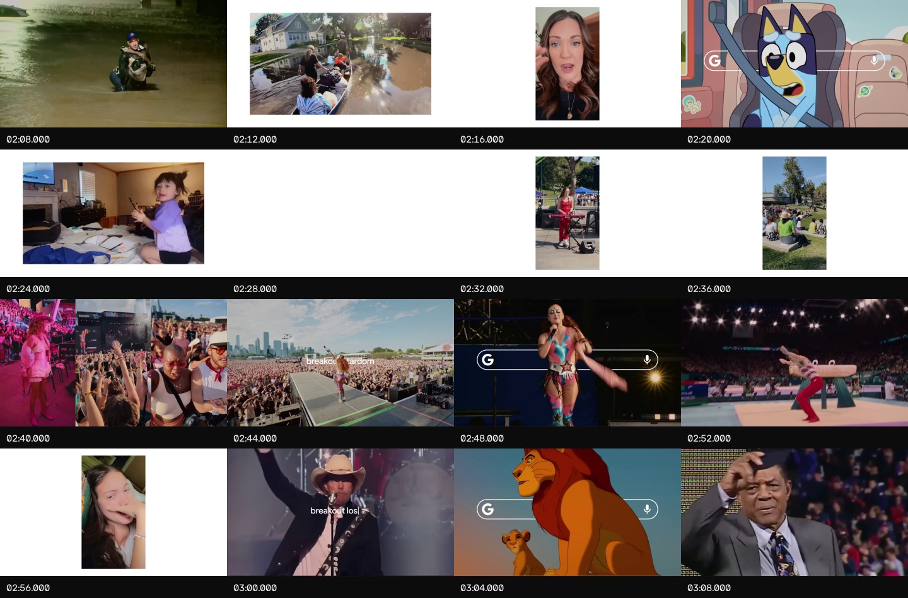
样片真正可复制的是一条清楚的能量曲线。15 秒窗口里，00:15–00:30 约 80 镜/分钟；02:15–02:30 降至约 28 镜/分钟；03:15–03:30 又升到约 76 镜/分钟；最后降到约 21 镜/分钟。
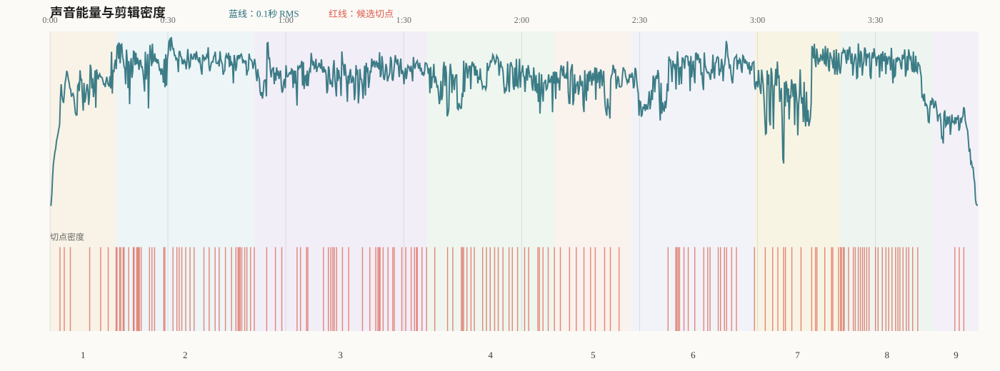
| 样片章节 | 时长 | 候选镜头/平均时长 | 叙事任务 | 你的改编任务 |
|---|---|---|---|---|
| 序章｜被全世界注视 00:00–00:16.808 | 16.8s | 7 / 2.401s | 黑场文字、人物、烟火，再用采访里的“搜索”把主题说出来。 | 黑底年份、旧厂、创业者眼神：只问“他们改变了什么？” |
| 破圈｜流行瞬间 00:16.808–00:51.969 | 35.2s | 42 / 0.837s | 第一次高速释放，建立年度规模和文化活力。 | 1978–90年代萌芽：开门、开机、营业执照、第一张订单。 |
| 竞技｜群体狂欢 00:51.969–01:35.804 | 43.8s | 33 / 1.328s | 让比赛、情绪、音乐保持连续动能。 | 制造、渠道、出口、品牌；按“行动—结果—反应”组链。 |
| 惊奇｜天象与突破 01:35.804–02:08.337 | 32.5s | 27 / 1.205s | 从奇观进入选举、太空和医学进展。 | 入世、电商、移动互联网、科技与全球化。 |
| 考验｜灾难与连接 02:08.337–02:28.000 | 19.7s | 10 / 1.966s | 降速，让灾难、互助和脆弱真正被感到。 | 危机、转型、疫情、传承冲突；用真实人物原声取代口号。 |
| 梦想｜被看见 02:28.000–02:59.221 | 31.2s | 19 / 1.643s | 音乐转暖，关注坚持与“一夜成名”背后的十年。 | 二代登场、创新、两代共同创业。 |
| 传承｜榜样与告别 02:59.221–03:21.118 | 21.9s | 16 / 1.369s | 从个人成功转向榜样、纪念和代表性。 | 创始人、制度、家风与企业真正留下的东西。 |
| 回响｜希望与爱 03:21.118–03:44.766 | 23.6s | 27 / 0.876s | 旁白给出答案，画面第二次高速聚合。 | “选择、韧性、创新、责任仍在继续”，群像冲顶。 |
| 品牌收束｜Google 03:44.766–03:56.236 | 11.5s | 4 / 2.867s | 突然变慢，白场和品牌标识让观众记住落点。 | 整套丛书、发布信息、读者接书：“给中国家族企业的一份礼物”。 |
下面每张图都是同一转场前后的连续帧。先看画面关系，再看效果名称。实际复刻时，普通硬切应占主体。
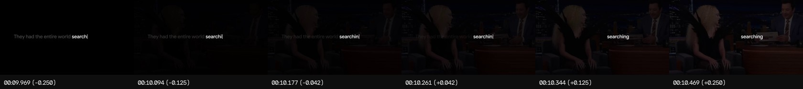
画面先讲“搜索”，下一段人物原声正好提到自己被搜索。真正连接两段的是意思和声音，淡入只是表面。
复刻：先听到创业者说“那一年……”4–12 帧，再淡入人物；屏幕仍保留年份或档案关键词。
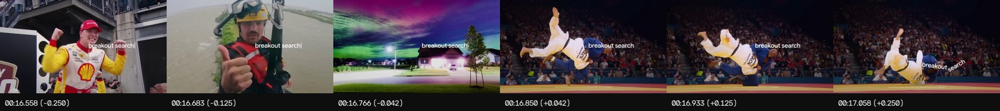
这不是一个预设转场，而是若干个可辨认“攻击点”的短镜头：人物、动作、奇观快速闪现，然后恢复正常速度。
复刻：把营业执照、厂门打开、机器开机、第一张订单做 4–8 连切，每镜 5–14 帧，只放在章节点火处。
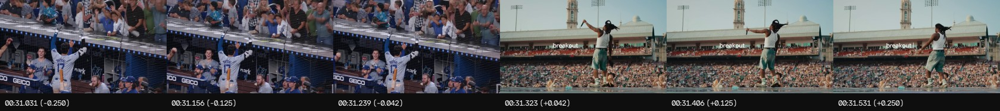
两个来源并不相同，但运动方向和身体姿态相似。切在前一个动作完成 50%–70% 的位置，下一镜从动作中段接起。
复刻：挥锤 → 机械臂；举手 → 剪彩；推门 → 生产线向前运动。不要加花哨转场。
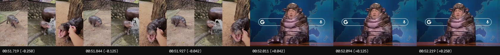
相同位置的图形元素跨切停留，既完成换章，也不断提醒观众全片母题是“搜索”。
你的原创改写：不要复制搜索框。让“1978／档案 001／第一章”占据同一位置，8–16 帧轻推后进入历史画面。
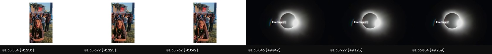
中心位置、尺寸与明暗关系先匹配，观众就能接受跨时空硬切。
复刻：齿轮 → 地球；厂徽 → 机器镜头；印章 → 书页圆形章。必要时只加 2–4 帧暗闪。
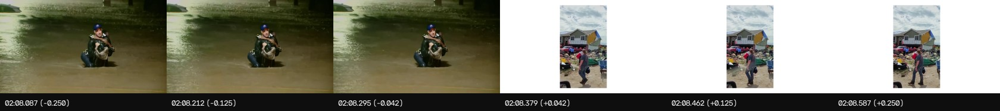
竖屏素材没有被强行裁满，而是放在浅色画布中。画幅变化就是一种节奏变化，也提醒观众这是现场记录。
复刻：9:16 素材占画宽 60%–70%，背景用 #f7f7f7；轻推 6–12 帧，保留手机原声。
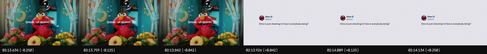
先让观众认识人物或事件，再展示原始帖文/文件，信息就会比单纯叠字幕更可信。
复刻：创业者 → 营业执照；生产线 → 年报数字；两代合影 → 原始采访短句。证据必须可追溯。
危机之后没有立刻继续轰炸，而是短暂停住，为“梦想”段腾出情绪空间。
复刻：危机静止镜头 → 8–20 帧留白/近黑 → 翻开新一代档案。不要用白闪替代真正停顿。
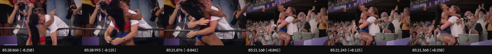
总结旁白已经开始，画面仍停留在拥抱上。这种不完全同步给观众消化空间，随后才进入高速总结。
复刻：先在父子/团队拥抱上说出总结第一句，再进入多家企业群像。
最后阶段只剩少量长镜头，白色场保持视觉连续，让标识真正被记住。
复刻：群像高潮 → 白场 → 读者接书 → 整套丛书 → 发布信息。最后 11 秒不超过 4–5 个镜头。
最小转场工具箱：匹配硬切、音频桥、图形门户、黑/白场标点、极少量溶接。先用这五种完成全片，再决定是否还缺效果。
这种混剪最难的部分常常不是剪，而是找到“既能证明一句话，又有动作、情绪和原声”的素材。搜索目标不是“家族企业视频”，而是一个个可验证的事件与动作。
| 来源 | 适合找什么 | 优势 | 发布前要做什么 |
|---|---|---|---|
| 企业一手档案 | 老照片、第一件产品、工厂、家族人物、会议、旧广告 | 独家、具体、与主题最相关 | 取得书面使用确认；记录人物肖像与照片权属 |
| 政府/交易所/档案馆 | 政策节点、上市资料、产业背景、历史文件 | 事实权威、便于校对年份 | 逐页查看使用条款，公开可查不等于无版权 |
| 授权新闻与影像库 | 改革开放、入世、危机、重大新闻、历史街景 | 真实事件覆盖完整 | 购买与发布平台、地区、期限匹配的许可 |
| 企业官方发布/正式采访 | 人物原声、经营动作、接班观点 | 声音是混剪最强的连接材料 | 联系权利方；避免把平台下载当作转载授权 |
| 商用素材库 | 非特定港口、机器、运输、家庭生活等桥接画面 | 清晰、授权路径明确 | 保留订单和许可证；不将其标成特定历史事实 |
| 自摄/扫描 | 书、读者、家庭相册、现厂、两代同框 | 最能建立你的片子独特性 | 统一色彩、清洁扫描并保留原文件 |
“企业名 1992 第一条生产线 采访”
“创始人 2001 出口 签约 现场”
“公司名 二代接班 演讲 官方”
“入世 民营企业 新闻报道 现场”
“2008 制造业 企业家 采访”
“疫情 复工 家族企业 纪录片”
China family business factory archival footage
Chinese entrepreneur interview 1990s
manufacturing succession family-owned company
开门、点火、装箱、签字、递交、拥抱、凝视、翻页、按下、启动。少搜“震撼”“高级”“大气”。
版权提醒：本报告为个人学习拉片。公开平台上的视频可观看，不等于可以下载后重新剪辑发布。正式片中的新闻、影视、音乐、照片、UGC 和人物肖像都需要按实际场景核实许可。
样片把音乐、真实原声、旁白和现场反应当作四条接力棒。很多“转场感”其实来自下一段声音提前出现，而不是视觉特效。
每条只取一句有动作、判断或情绪的内容。前一条提出问题，后一条回答；或者前一条说“开始”，下一条直接出现启动声。
下一段声音提前 4–12 帧进入（J-cut）；前一段声音在换画面后延续 6–15 帧（L-cut）。先用耳朵检查，再看画面。
至少分四段：庄重提问 → 加速驱动 → 危机减速 → 希望冲顶与安静收束。不要用一首歌从头铺到尾而没有编排。
人物说话时，让背景音乐相对下沉约 4–8 dB，句尾再回升；这是实作建议，不声称是样片工程的精确混音值。
公开视频说明列出 Kendrick Lamar、Shaboozey、Jonathan Class & Collins McLaughlin、Unsecret String Quartet、Chappell Roan 等作品，并注明 Marcel Neumann、Simon Heeger 与 2WEI Music 的作曲、音乐制作、音效及混音参与。它提醒我们：样片的“高级感”不仅来自一首现成 BGM，而是经过多段音乐编辑和声音设计。
你的安全做法：不要复制这些曲目。为正式发布选择已授权音乐，或委托制作一条可分四段编排的原创配乐；先把人物原声剪通，再让音乐服务章节。
结构可以接近，内容必须变成你自己的。下面这一版将“搜索”换成“档案/年份/书页”，让丛书不是突然出现的广告，而是全片一直在翻阅的那本书终于显露封面。
| 时间 | 章节 | 画面核心 | 声音核心 | 文案任务 |
|---|---|---|---|---|
| 00:00–00:17 | 他们改变了什么 | 黑场、1978、旧厂门、创业者眼神 | 环境声＋一句老采访 | 只提出问题，不急着歌颂 |
| 00:17–00:52 | 敢为天下先 | 家庭作坊、营业执照、第一件产品 | 机器启动＋年代新闻短句 | 用动作建立第一代创业者 |
| 00:52–01:36 | 走向市场与世界 | 生产线、经销网络、港口、品牌 | 现场声接力 | 把扩张剪成因果，不做百科年表 |
| 01:36–02:08 | 技术与新商业 | 电商、支付、智能制造、全球研发 | 音乐第二层抬升 | 回答企业为何改变 |
| 02:08–02:28 | 考验 | 危机、空厂、会议沉默、互助 | 音乐抽空＋人物一句话 | 让宏大叙事回到人 |
| 02:28–02:59 | 下一代登场 | 两代同框、争执、交接、创新 | 温柔主题进入 | 接班不是身份，是继续承担 |
| 02:59–03:21 | 留下什么 | 创始人、员工、制度、家风 | 人物短句串联 | 不只传企业名字，更传选择与责任 |
| 03:21–03:45 | 共同经验 | 行业群像、家庭、员工、社区 | 总结旁白＋音乐冲顶 | 给出全片答案 |
| 03:45–03:56 | 一份礼物 | 白场、读者接书、整套丛书、发布信息 | 音乐尾音＋翻页声 | “献给中国家族企业的一份礼物” |
1978 → 1984 → 1992 → 2001 → 2008 → 2012 → 2020 → 今天。每次年份不是普通字幕，而像档案检索结果：先出现编号和一句事件标题，再由纸张纹理、印章、照片边框或书页推进带入真实素材。结尾镜头拉开，观众才发现这些“档案页”来自整套家族企业丛书。
分析对象：Google 官方发布的 《2024 — Year in Search》。本地核验版本约 03:56、1920×1080、23.976 fps，含 H.264 画面与 AAC 双声道音频。转写只用于定位原声和章节，不在本报告转载完整台词或歌词。
生成日期：2026-09-21。用途：个人剪辑学习与内部创作规划；不替代版权或法律意见。